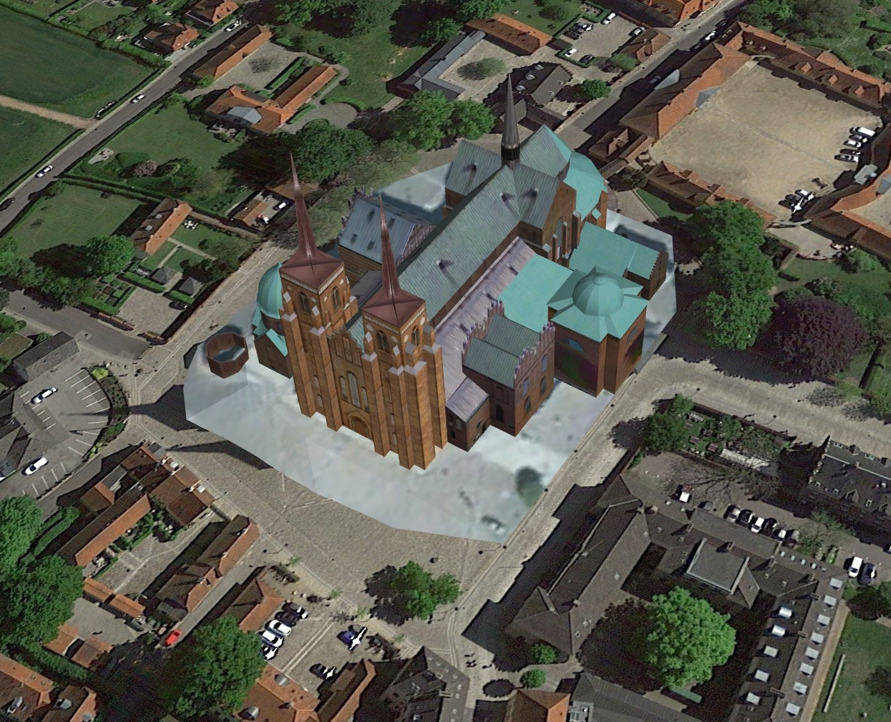

Katedra w Roskilde (duń. Roskilde Domkirke) – gotycka katedra znajdująca się w Roskilde na Zelandii, we wschodniej Danii. Jako pierwszy gotycki kościół w Skandynawii, katedra stała się inspiracją dla gotyckiego budownictwa sakralnego w całej Europie północnej.
Pierwszym kościołem, który powstał na miejscu obecnej katedry była, według Adama z Bremy, drewniana świątynia zbudowana przez króla Haralda Sinozębego, w murach której został później pochowany. Po tej budowli nie odnaleziono żadnych śladów. W XI w. drewniany kościół Trójcy Świętej, jak pierwotnie zwano późniejszą katedrę w Roskilde, został zastąpiony przez świątynię murowaną. Inicjatorką budowy była ks. Estrida, siostra króla Kanuta Wielkiego. Nowy kościół poświęcił ok. 1080 r. biskup Svend Normand, który ukończył budowę świątyni. Świątynia była bazyliką trójnawową z wieżami od strony zachodniej. Od strony północnej do świątyni przylegał budynek klasztoru służący za mieszkanie dla księży pełniących posługę w kościele. Około 1100 r. biskup Arnold otoczył całość murem i fosą, których resztki zalegają pod obecnym placem koło katedry. Plac ten do ok. 1820 r. służył jako cmentarz przykatedralny.
W poł. XII w. biskup Zelandii Absalon zainicjował przebudowę kościoła Trójcy Świętej w Roskilde w nowym stylu, który przywędrował do Danii, w gotyku. Rozpoczęte przez niego dzieło kontynuował biskup Skanii Anders Sunesøn i jego brat biskup Roskilde Peder Sunesøn, który podobnie jak Absalon, zdobył wykształcenie w Paryżu. Miało to decydujący wpływ na ostateczny kształt świątyni, która została przebudowana w stylu francuskiego gotyku, co było wtedy czymś zupełnie wyjątkowym w Danii. Budowa, do której zużyto ok. 3 milionów cegieł, została ukończona w ok. 1280 r. W XIV w. do katedry dodano dwie zachodnie wieże, ale charakterystyczne iglice wieńczące katedralne wieże zostały dodane dopiero w czasach panowania Chrystiana IV (1635).
Katedra posiada 6 dzwonów (dwa z nich, pochodzące z ok. 1200 i 1613 r., zostały zniszczone w pożarze katedry w 1968 r. i zastąpione nowymi odlanymi w Holandii). Katedra jest świątynią trójnawową otoczoną wianuszkiem kaplic z różnych okresów. Centralnym elementem wyposażenia katedry jest wykonany w ok. 1560 r. w Antwerpii ołtarz główny, po obu stronach którego znajdują się stalle drewniane z 1420 r. Ponadto w katedrze znajdują się organy z 1554 r. oraz freski z XV i pocz. XVI w. Jednym z ciekawszych urządzeń świątyni jest mechaniczny zegar z figurami z końca XV w. przedstawiający walkę św. Jerzego ze smokiem. Centralnym elementem kaplicy Trzech Króli, gdzie znajdują się wspaniałe renesansowe nagrobki Chrystiana III i Fryderyka II, jest tzw. królewska kolumna, na której wyryte są kreski oznaczające wzrost zwiedzających katedrę monarchów. Według pomiarów na kolumnie królewskiej najwyższymi gośćmi katedry byli duński król Chrystian I (219,5 cm), car Rosji Piotr I Wielki (208,4 cm) i król Danii Chrystian X (199,4 cm). Najniższymi zaś: król duński Fryderyk VI (170,9 cm), król Syjamu Chulalongkorn (165,4 cm) i król Danii Chrystian VII (164,1 cm).